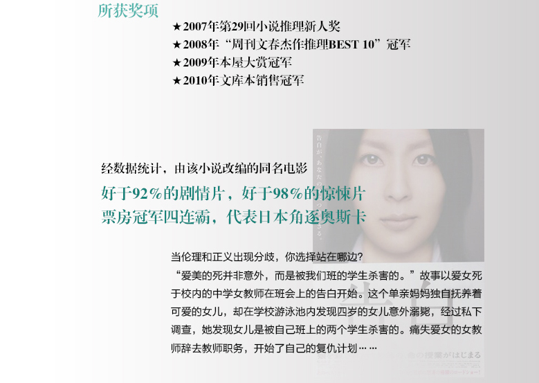
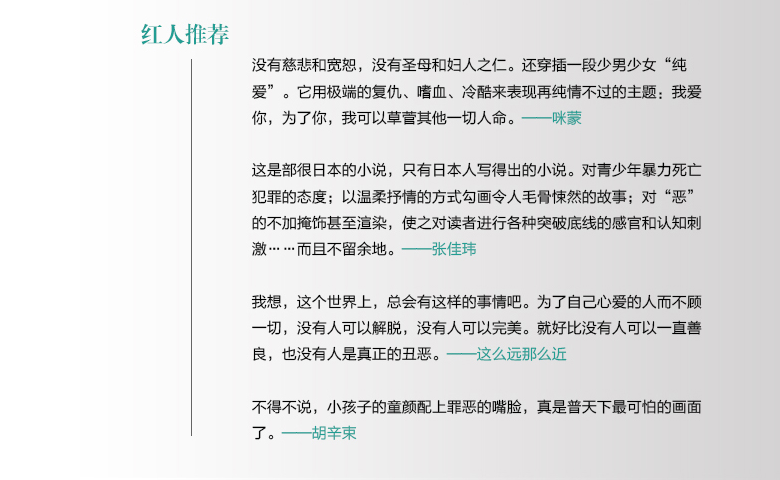

首页


Previous
Next
商品名称: 《告白》
价 格:￥25.40
商品类型：书籍
运费:包邮
库存：有货
1.此商品不支持7天无理由退货
2.此商品由 海囤全球 发货并提供售后服务
3.此商品不提供国内购物发票
4.此商品支持白条30天免息或分期支付，不可使用京豆、京东卡、京东E卡、余额支付，不支持货到付款
5.根据中国海关总署要求，您所购买的商品清关入境需要提供身份证信息进行入境申报，请您配合。我们不会向第三方泄露您的资料，请您放心
立即购买
加入购物车
详 情
内容推荐 当伦理和正义出现分歧，你选择站在哪边？ “爱美的死并非意外，而是被我们班的学生杀害的。”故事以爱女死于校内的中学女教师在班会上的告白开始。这个单亲妈妈独自抚养着可爱的女儿，却在学校游泳池内发现四岁的女儿意外溺毙，经过私下调查，她发现女儿是被自己班上的两个学生杀害的。痛失爱女的女教师辞去教师职务，开始了自己的复仇计划…… 小说从复仇者、杀人者、杀人者家属等不同的角度展开，层层揭开事件真相。在这场令人震惊的校园犯罪中，教师、家长、学生，谁才是罪魁祸首？以暴制暴，究竟是对善的维护，还是恶的张扬？ 爱与痛，善与恶，罪与罚，频频敲击我们内心的道德尺度。真正的光明，必定来自阴暗的深处。 《告白》是日本当红推理小说家湊佳苗的经典之作，日本销量逾340万部，获得2007年第29回小说推理新人奖、2008年“周刊文春杰作推理BEST 10”***、2009年本屋大赏***、2010年文库本销售***。此外，经数据统计，由该小说改编的同名电影，好于92%的剧情片，好于98%的惊悚片；斩获第30届香港电影金像奖*佳亚洲电影、第34届日本电影学院奖*佳影片、第5届亚洲电影大奖*佳电影；连续四次成为票房冠军，代表日本角逐奥斯卡。 作者简介 ★湊佳苗 日本当今炙手可热的推理小说女作家。1973年出生于日本广岛，毕业于武库川女子大学家政学部。 2005年，获得第2届BS-i新人剧本奖。 2007年，获得第35届创作广播剧大奖，同年以短篇推理小说《神职者》获得第29届小说推理新人奖。 2008年，收录有《神职者》的推理小说《告白》获得“周刊文春杰作推理BEST10”***。 2009年，《告白》获得本屋大赏***。其后，该小说被改编成电影，好评如潮。 2012年，其作品《望乡、海之星》获得第65届日本推理作家协会短篇奖。 此外，她还著有《少女》《赎罪》《为了N》《夜行观览车》《往复书简》《闺密》《白雪公主杀人事件》《望乡》等作品。
评 价
暂无评价